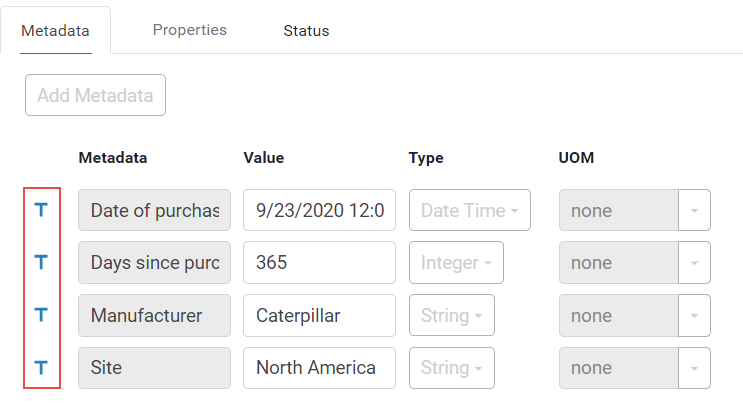
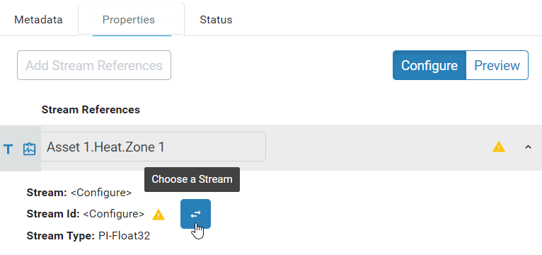

Create an asset from an asset type
For more information on asset types, see Asset types.
Click the menu icon
 and click Asset Explorer.
and click Asset Explorer.Click the plus symbol (+) in the toolbar to open the Select Type for New Asset window.
Select the type from the list and click Continue. The details blade opens on the right side.
Click the pencil icon in the toolbar.
Enter a name and description for the asset. Note: The asset type on which this asset is based is shown in the Asset Type field.
Click the Metadata tab.
Edit the values for any of the metadata. Note: You can only edit the values. The metadata are derived from an asset type, as indicated by the T and, therefore, you cannot add or delete metadata or change the type.

When you are done, click Save.
Click the Measurements tab.
Click the caret symbol for a stream reference.
Click Choose a Stream to open the Select Stream window.

Select the stream from the list of streams.
Note: Only streams of the type specified for the stream reference are displayed. In this example, only streams of type PI-Float32 are displayed.
Search on the stream name, ID, or description. You can use the asterisk (*) as a wildcard.
Click Add.
Click Configure UOMs.
On the Configure UOMs page, make any changes to the property UOMs.
Note: UOMs can be set only on numeric types.
When you are done, click Save.
Note: Once you click Save, any changes are immediately made to the UOMs on the stream, regardless of any other actions you take on this asset. For example, the UOM changes to the stream are not reversed if you click Cancel on the Measurements tab or if you delete the asset.
Click Save to save the asset.